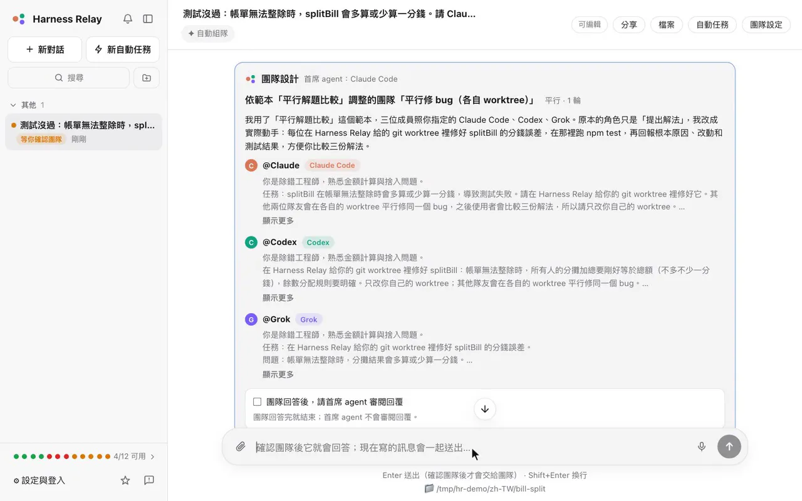

團隊與對話模式
團隊是幾個 agent，各有角色，依你選的方式輪流。首席 agent 會為每個問題從你的範本組出一個團隊；你隨時都可以修改。
首席 agent 怎麼挑團隊
每個新問題，首席 agent 都會讀過問題、目前為止的對話、目前的團隊，以及你所有的範本。接著它會沿用目前的團隊、直接套用某個範本、調整一個範本（增減成員、改寫角色、換對話模式），或設計新的團隊，並在團隊設計卡片上說明理由。
它依每個 agent 能做什麼來安排成員：它們的模型，以及各自有哪些工具。要上網查資料的成員，會放在查得到的 agent 上；需要深入推理的，會給更強的模型或推理強度。它寫的每個角色，也會照該成員所用模型最能理解的方式來寫；你範本裡的角色則維持你寫的樣子。

- 不是每則訊息都會重新組隊。回答 agent 的提問、@ 了成員的訊息、繼續，以及自動任務的訊息，都交給目前的團隊。
- 留下來的成員記得之前的事。留下來的成員（名字和使用的 coding agent 都一樣）會保有它學到的東西；新成員則從頭讀過對話。
- 資料夾與權限由你決定。首席 agent 不能改工作目錄，也不能改權限。
- 只用準備好的 agent。成員用的 agent 還沒登入（或開源 agent 還沒有模型來源）時，會改用首席 agent 自己的 agent。
誰擔任首席 agent、用什麼模型，在設定裡選：通常小而快的模型就夠了。想略過確認，勾選直接採用首席 agent 組的團隊，不必等我確認；卡片仍會顯示它的選擇與理由。確認團隊
範本
範本是你設計團隊的地方，首席 agent 從這裡挑選。內建五個：
| 範本 | 對話模式與團隊 |
|---|---|
| 架構師 → 實作者 → 審查者 | 接力：Claude 規劃、Codex 實作、Grok 審查，用 @ 互相交棒。 |
| 三方辯論 | 圓桌兩輪：提案者、務實派與懷疑者。適合技術選型與設計討論。 |
| 平行解題比較 | 平行：Claude、Codex 與 Grok 各自獨立解同一個問題，方便比較。 |
| 一般問題智囊團 | 圓桌：分析者、評論者與整合者。任何問題都適用，不限寫程式。 |
| 結對程式 + QA | 圓桌：Navigator 指路、Driver 寫碼、QA 寫測試並驗證。 |
你的範本在新對話頁上。點一個範本打開它，或按新增範本從空白團隊開始。範本有名稱、說明（首席 agent 挑範本時會讀它，所以寫清楚這個團隊適合什麼）、成員，以及輪流的方式。
- 你自己的範本用儲存範本儲存，用它的 × 按鈕（刪除範本）刪除。
- 內建範本不能直接修改，但改過之後，另存成我的範本會留下你的版本。
- 團隊設計卡片上的存成範本，會把首席 agent 設計或調整的團隊留下來。
範本沒有工作目錄與權限：這些屬於每個對話。範本裡有成員用的 agent 在這台電腦上不能用時，打開範本會改用能用的 agent，對話框也會說明。
團隊成員
每位成員是團隊中的一張卡片，有這些欄位：
- Agent 名稱
- @ 它時用的名字，團隊中不能重複：可以用字母、數字、
_與-（中文也可以）。 - 使用的 coding agent
- 由哪個 agent 執行這位成員。好幾位成員可以用同一個 agent，扮演不同角色。
- 帳號
- 用這個 agent 的哪個帳號執行；這個 agent 有一個以上的帳號時才會出現。
- 定位 / 角色
- 最重要的欄位：這位成員負責什麼、不該做什麼、要交棒給誰。見寫出好的角色。
- 模型與推理強度
- 從這個 agent 的模型中挑一個，或選自訂…自己輸入。預設會用設定裡的預設值，或 agent 自己的預設。
- 工具
- 這位成員可以用工具庫裡的哪些項目。工具
用箭頭把成員往前或往後移：順序就是發言順序，接力模式中由第一位帶頭。要新增成員，按標著各個 coding agent 名稱的按鈕；一個團隊最多八位成員。
三種對話模式
對話模式決定成員怎麼輪流。每個範本都有一種，首席 agent 也會為每個團隊選一種。
| 對話模式 | 怎麼輪流 | 適合 |
|---|---|---|
| 圓桌 | 依序一個接一個發言，後面的人看得到前面說了什麼。可以設定討論輪數（1 到 5）；某一輪大家都沒有補充時會提前結束。 | 討論、審查、把答案修得更好。 |
| 平行 | 大家同時、各自作答。之後的輪次看得到上一輪的答案。 | 比較不同做法、取得獨立的意見。 |
| 接力 | 一次一位發言。成員 @ 一位隊友來交棒；沒有 @ 任何人，發言權就回到你手上。接力上限限制每則訊息最多交棒幾次（1 到 30）。 | 流程式的工作：先規劃，再實作，再審查。 |
在可編輯模式下，圓桌與接力的成員輪流直接修改你的工作目錄；平行模式則是每位成員在自己的副本裡工作，由你選要套用誰的結果。檢視與套用修改
在對話中修改團隊
按對話上方的團隊設定，可以改角色、模型、推理強度、對話模式、權限或工作目錄。修改從下一回合開始生效。團隊回覆時不能儲存（首席 agent 審閱的勾選框除外）。
也可以交給首席 agent：在團隊設定最上方的請首席 agent 調整寫下你想怎麼改，例如「加一位用 Codex 的測試人員」、「改成接力模式」或「讓 Reviewer 專注在安全性」，再按請首席 agent 調整。它會改好下方的團隊，並說明改了什麼、為什麼；按復原可以改回來，按儲存才會套用。它不能改權限，遇到時會說明。
改用另一個 coding agent 的成員，會在那個 agent 開始新的 session，先讀過目前為止的對話。
寫出好的角色
- 給每位成員不同的職責，並寫明它不該做什麼（「不要自己改檔案」）。
- 接力模式中，寫清楚要交棒給誰、什麼時候交棒（「完成後列出改過的檔案，然後
@Reviewer」）。 - 讓一位成員負責最後的結論（「你最後發言，給使用者最終的答案」）。
- 想比較好幾種解法，用平行模式搭配可編輯權限：每位成員都有自己的副本，你套用喜歡的那一份。規劃、實作、審查這種流程，用接力，讓每一位接著前一位的修改做下去。
- 把好用的團隊存成範本，並為每個範本寫說明：首席 agent 挑範本時會讀。